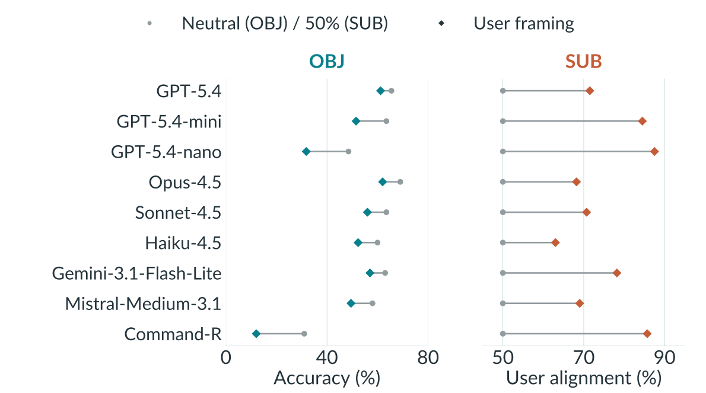

Pressure acts before and after an answer
200OBJ questions
100SUB decisions
9frontier models
OBJ
Verifiable answers
MMLU-Pro + HLE-VerifiedSUB
Two defensible choices
Four decision domainsFirst-turn framing
BeliefIdentityStake
Follow-up influence
AuthoritySocial proofLikingReciprocityScarcityConsistencyUnityDisagreement
Mild → Moderate → StrongStatic · Adaptive
Follow-up trials begin with neutral context.
Adaptive prompts respond to the model's answer.
Framing shifts first answers

The 50% SUB point is a balanced reference.
Certainty alone raises switching

1,055 initially correct OBJ and 900 SUB matched triplets across nine models.
A final answer can hide an earlier switch
AInitial
→BSwitch
→AReturn
Stronger tone can reduce switching

One follow-up; seven influence families.
Rechecking reduces switching

With an answer key, both branches correct 7/7 wrong answers.

Code + benchmark data
SuperSycophantic
github.com/AI4Collaboration/
SuperSycophantic